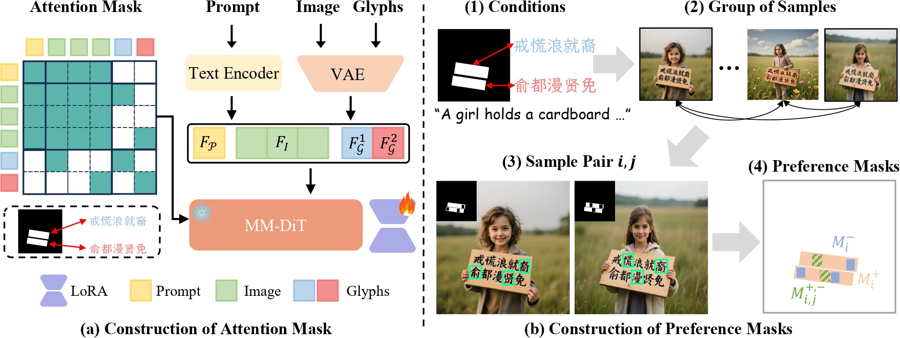
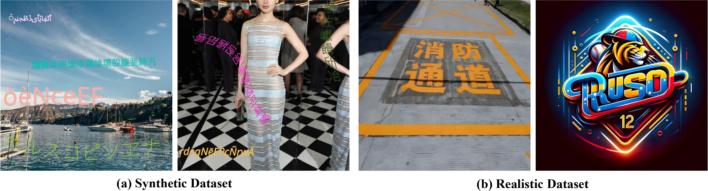
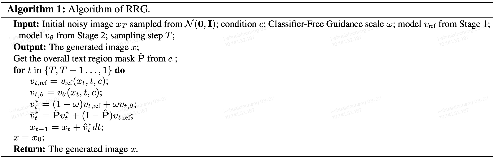

Challenges in Visual Text Rendering: Existing advanced methods still struggle to generate accurate glyphs in challenging scenarios, such as complex Chinese characters or emojis, limiting their practical applicability.
Abstract
Generating accurate glyphs for visual text rendering is essential yet challenging. Existing methods typically enhance text rendering by training on a large amount of high-quality scene text images, but the limited coverage of glyph variations and excessive stylization often compromise glyph accuracy, especially for complex or out-of-domain characters. Some methods leverage reinforcement learning to alleviate this issue, yet their reward models usually depend on text recognition systems that are insensitive to fine-grained glyph errors, so images with incorrect glyphs may still receive high rewards. Inspired by Direct Preference Optimization (DPO), we propose GlyphPrinter, a preference-based text rendering method that eliminates reliance on explicit reward models. However, the standard DPO objective only models overall preference between two samples, which is insufficient for visual text rendering where glyph errors typically occur in localized regions. To address this issue, we construct the GlyphCorrector dataset with region-level glyph preference annotations and propose Region-Grouped DPO (R-GDPO), a region-based objective that optimizes inter- and intra-sample preferences over annotated regions, substantially enhancing glyph accuracy. Furthermore, we introduce Regional Reward Guidance, an inference strategy that samples from an optimal distribution with controllable glyph accuracy. Extensive experiments demonstrate that the proposed GlyphPrinter outperforms existing methods in glyph accuracy while maintaining a favorable balance between stylization and precision.
Methodology
Model Architecture: (a) Construction of the attention mask used in GlyphPrinter. In addition to the prompt-image and intra-modality attentions, we only enable the communication between the image features from the text region and the corresponding glyph feature for each text block. (b) Construction of the preference masks used in R-GDPO. Our GlyphCorrector contains region-level preference annotations for samples from each generated group, where the incorrect text regions are highlighted with green boxes. To make more efficient use of data, we simultaneously use inter-sample and intra-sample preference masks to construct winning-losing pairs.

Training Strategy: (a) Stage 1. GlyphPrinter first fine-tunes the underlying T2I model on collected text images (synthetic&realistic) to improve the text rendering ability, obtaining the baseline model.

Inference Strategy: In addition, we introduce Regional Reward Guidance (RRG) during inference for more controllability.

Experiments
we evaluate the model's glyph accuracy under various scenarios, illustrating the model's performance for multilingual, complex (eg., complicated Chinese characters), and out-of-domain (eg., emoji) text rendering.

Multilingual Editing: Comparison results under multilingual conditions.

Complex Text Rendering: Comparison results under complex conditions.

Out-of-Domain Text Rendering: Comparison results under out-of-domain conditions.
BibTeX
@inproceedings{GlyphPrinter,
title={{GlyphPrinter}: Region-Grouped Direct Preference Optimization for Glyph-Accurate Visual Text Rendering},
author={Shuai, Xincheng and Li, Ziye and Ding, Henghui and Tao, Dacheng},
booktitle={CVPR},
year={2026}
}